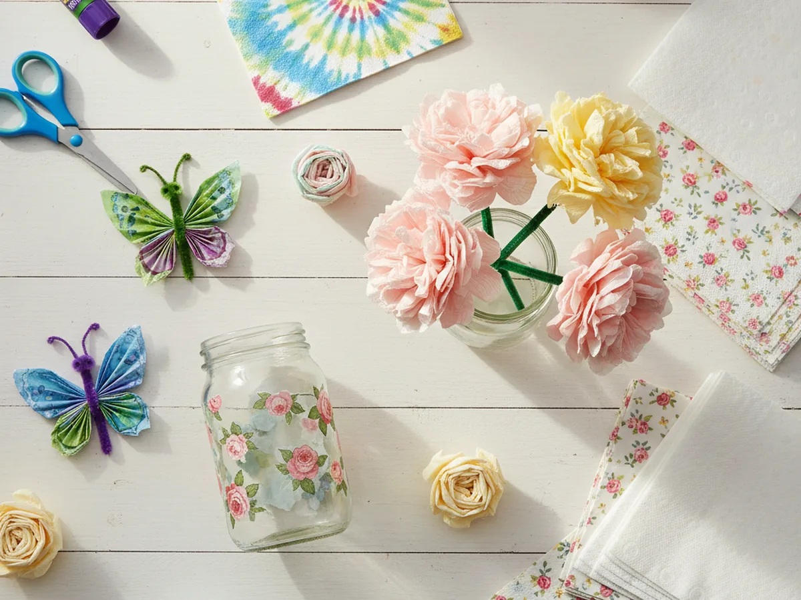
Paper napkins are one of those magical little things tucked in every kitchen drawer that almost nobody thinks of as a craft supply. But these soft, papery squares are honestly perfect for sweet rainy-afternoon projects with kids. These easy crafts using paper napkins turn a basic dinner-table item into flowers, butterflies, suncatchers, and so much more, with very little mess and very little prep. 🌸
We pulled together 20 of our favorite ideas, from quick fluffy napkin flowers to decoupage jars and tiny tie-dye masterpieces. Whether your child is two and just learning to scrunch paper or eight and ready for a small Mod Podge project, there is something here that fits.
What You'll Need
Most of these crafts using paper napkins share a small handful of basics, so one quick supply check covers nearly the whole list.
- Bounty white paper napkins, the simple foundation for almost every project on this list.
- Crtiin floral decoupage napkins, gorgeous patterned napkins for jars, rocks, and tote bags.
- Crayola washable broad line markers, perfect for napkin tie-dye and color bleed art.
- Mod Podge matte sealer and glue, the secret ingredient for napkin decoupage projects.
- Elmer's washable purple glue sticks, mess-free and great for layering napkin shapes.
- Fiskars blunt-tip kids scissors, safe and easy for little hands.
- Pipe cleaners assorted colors, ideal for napkin flower stems and butterfly bodies.
- Fine mist spray bottles, for the tie-dye and watercolor bleed projects.
- Optional extras: lollipop sticks, paper plates, clean glass jars, twine, ribbon, and a few small smooth rocks.
20 Adorable Paper Napkin Craft Ideas
1. Tie-Dye Paper Napkin Art
Fold a white paper napkin into a small triangle, dot the edges with washable markers, then mist gently with water and watch the colors bleed and blend like real tie-dye. Unfold to reveal a kaleidoscope of soft swirling color. This is one of those crafts using paper napkins that feels almost like a little science experiment for kids.
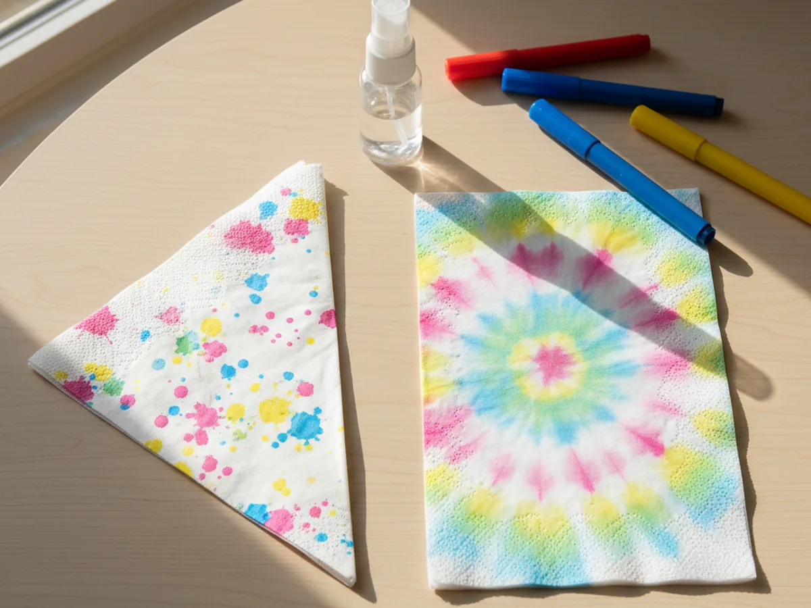
2. Fluffy Paper Napkin Flowers
Stack four colorful napkins, accordion fold them together, then pinch the middle and twist a pipe cleaner around the center. Fluff the layers up gently and you have a full puffy flower in under five minutes. These paper napkin flowers are a classic for a reason and look adorable in a little vase on the kitchen table.
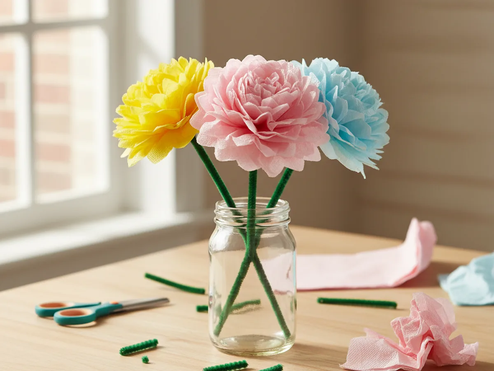
3. Paper Napkin Butterflies
Layer two patterned napkins, pinch them together at the middle, and wrap a pipe cleaner around the center to form the body and antennae. Spread the napkin wings open and you have an instant butterfly. These crafts using paper napkins make a cheerful spring mobile when you hang a few from a string above a child's bed.
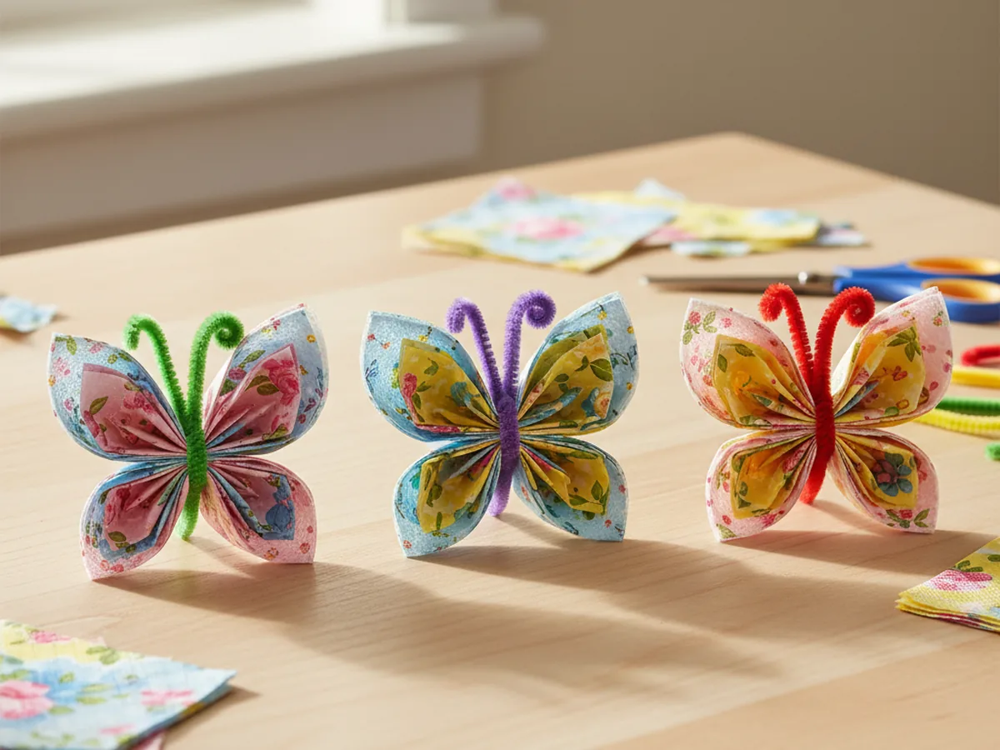
4. Mod Podge Decoupage Jar
Peel off the printed top layer of a patterned napkin, lay it gently on a clean glass jar, and brush Mod Podge over the top to seal it. Let it dry and the napkin pattern looks painted right on. Pop a tea light or a few flowers inside and your child has a real keepsake gift for grandma. ✨
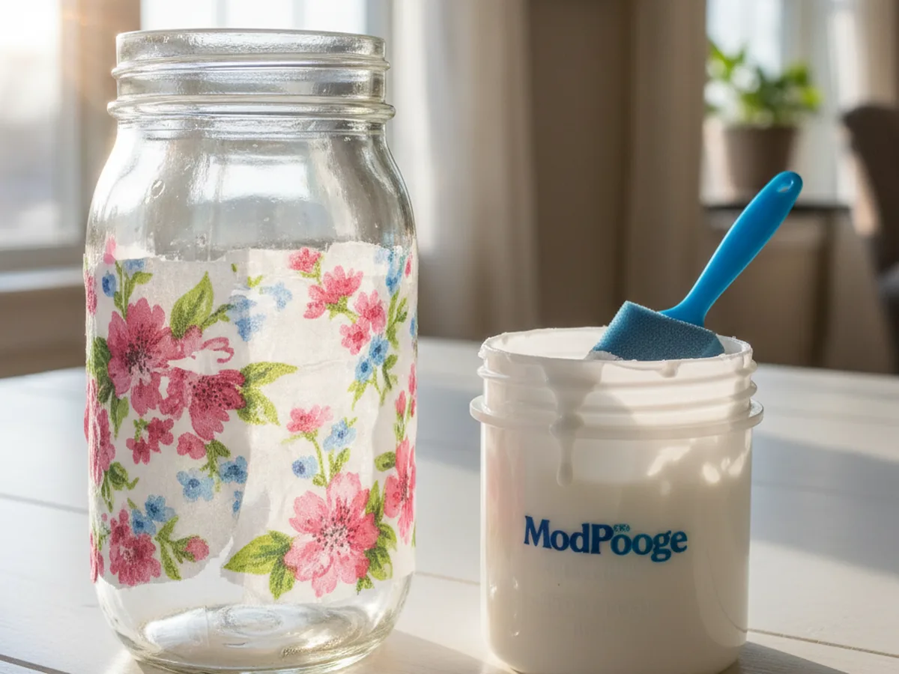
5. Paper Napkin Snowflakes
Fold a white napkin into a small triangle and snip tiny shapes out along all the edges with kid scissors. Unfold carefully and you get a delicate, lacy snowflake every single time. These tape beautifully to a window or the front of the fridge for an instant winter feel any time of year.
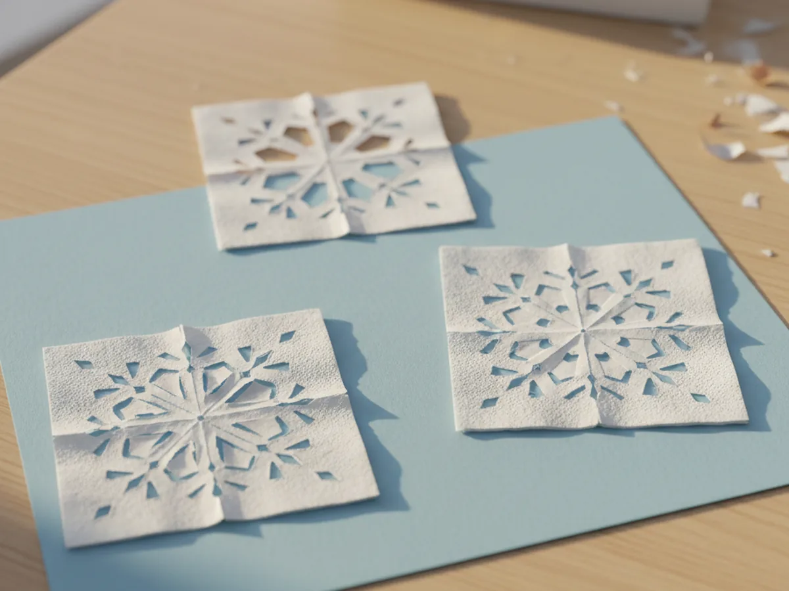
6. Paper Napkin Suncatcher
Tear a few colorful napkins into small pieces and let your child press them onto a piece of clear contact paper. Cover with a second sheet of contact paper, trim into a shape, and tape to a sunny window. The light glows through the napkin colors in the loveliest way, especially in the morning. ☀️
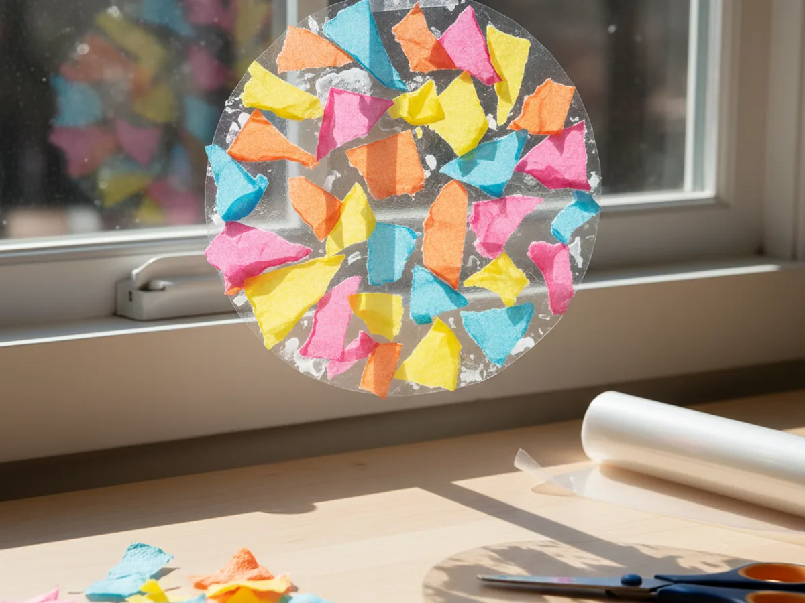
7. Paper Napkin Ghost Lollipops
Drape a white napkin over a wrapped lollipop, tie a small ribbon around the stick to form the head, and draw two little dot eyes on the front. They are the cutest tiny paper napkin craft for fall parties, classroom treats, or the start of October. Kids love handing them out as much as they love making them.
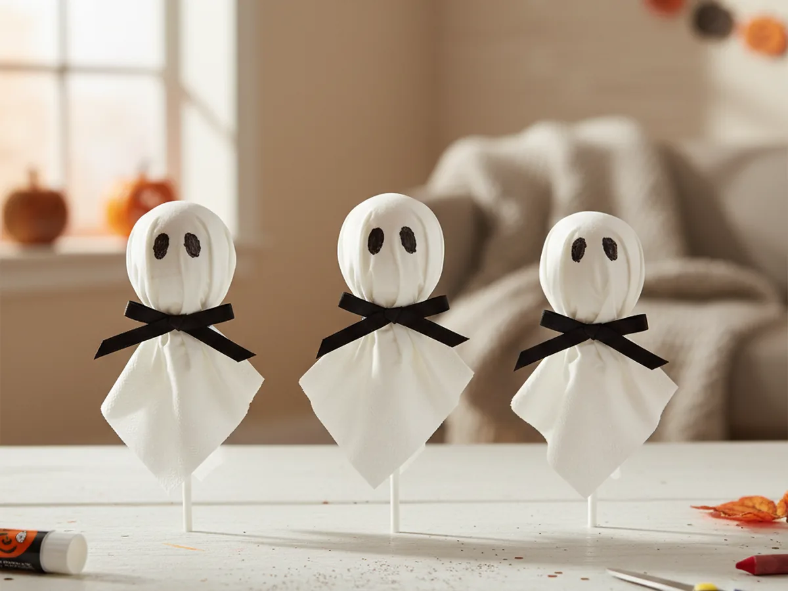
8. Paper Napkin Rose Bouquet
Roll a single pink or red napkin tightly along one edge, then twist the bottom to create a stem and gently shape the top into a soft rose bloom. Glue the rose onto a green pipe cleaner stem and add a small green leaf cut from another napkin. A handful of these napkin roses make a beautiful little Mother's Day bouquet.
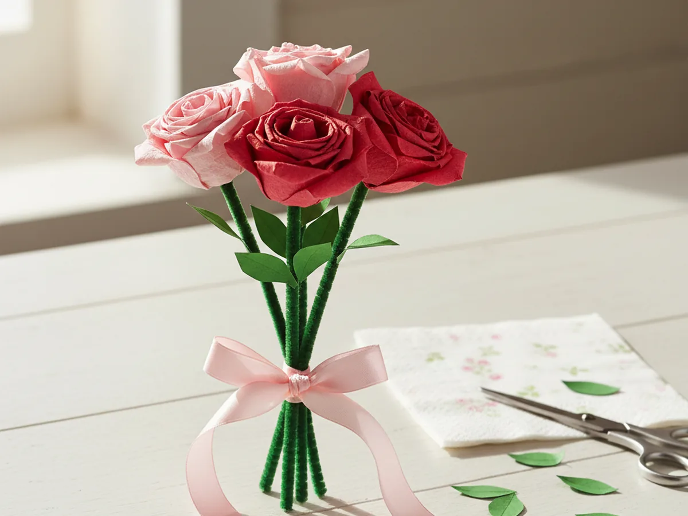
9. Paper Napkin Easter Chick
Crumple a yellow napkin into a small ball and wrap a second flat yellow napkin around it to form a fluffy chick body. Glue on tiny orange paper feet, an orange triangle beak, and two googly eyes. This is one of the sweetest simple paper napkin crafts for spring and a wonderful little Easter basket addition.
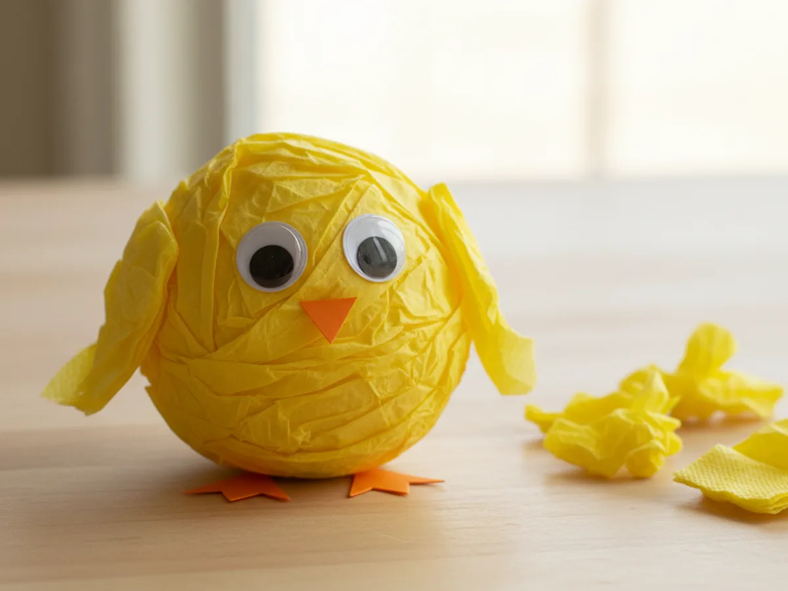
10. Paper Napkin Princess Doll
Wrap a colorful napkin around a wooden clothespin or a popsicle stick to form a flowing dress, then tie it at the waist with a little ribbon. Draw a sweet face on the top and add a tiny paper crown. Kids love making a whole row of little napkin dolls in different colors for an instant story-time cast.
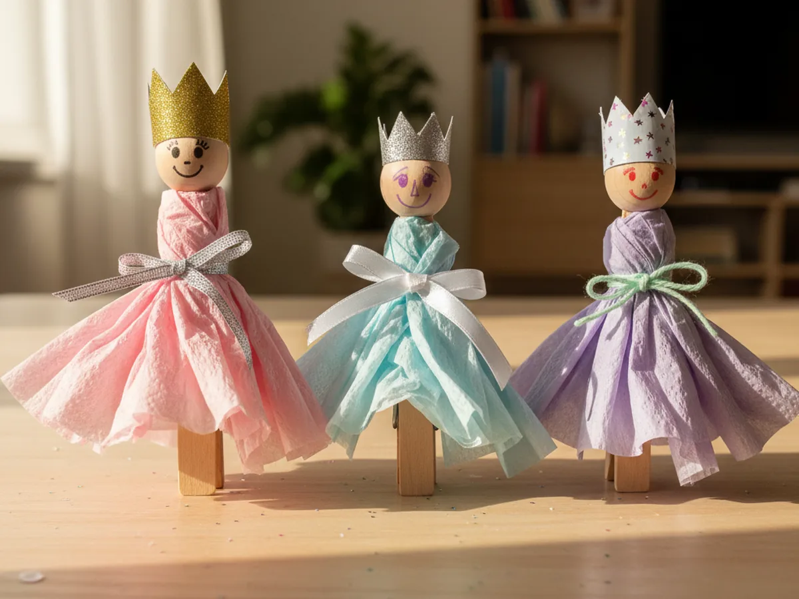
11. Layered Napkin Heart Card
Cut a heart shape from a folded piece of pink cardstock, then glue scrunched bits of pink and red paper napkin all over the front to fill it in with soft texture. Inside, your child can write a sweet message. It is a simple way to turn a flat card into something that genuinely looks handmade and full of love. 💕
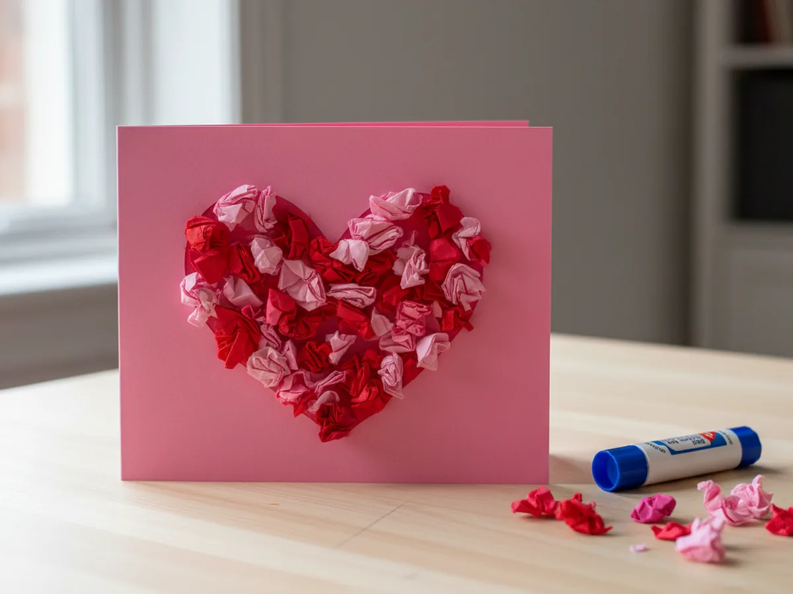
12. Paper Napkin Wreath
Cut a ring from a paper plate, then glue rolled or scrunched paper napkin rosettes all the way around the ring in mixed colors. Tie a ribbon at the top and hang it on the front door for a soft, fluffy wreath that looks like it took hours. It is the kind of craft that makes the whole house feel a little cozier instantly.
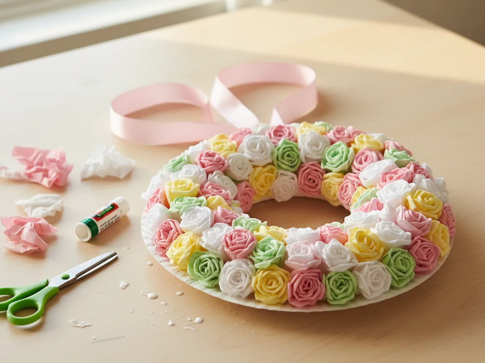
13. Paper Napkin Pom Pom Garland
Layer four colorful napkins, accordion fold them, then tie a string tightly around the middle. Snip a rounded shape on each end and fluff the layers out into a little pom pom. Repeat with three or four colors, then string them together for a cheerful garland over a child's bed or a birthday banner table.
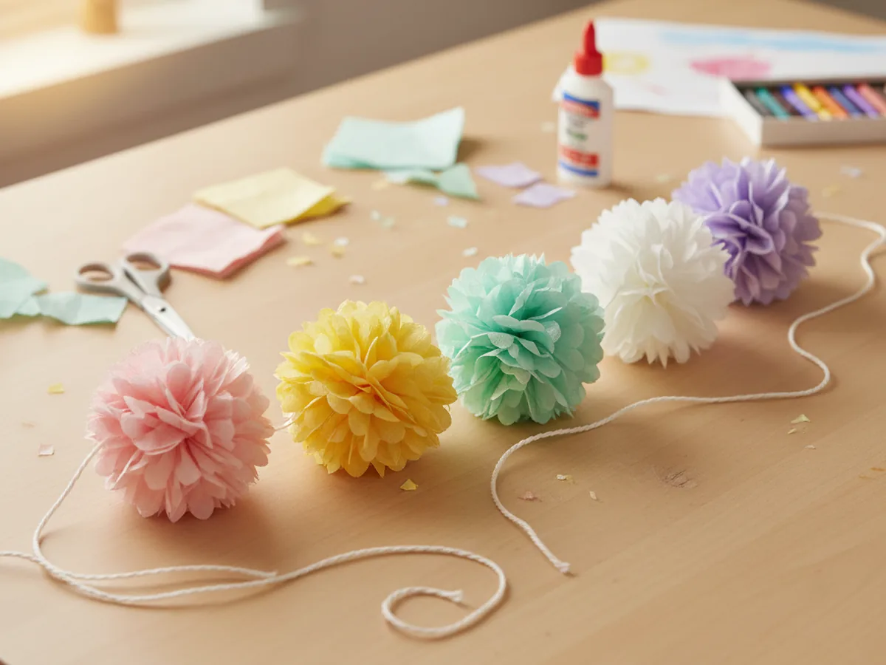
14. Folded Napkin Bunny
Fold a square napkin into a pointy bunny shape with two long upright ears using a few simple folds, then tuck a little cotton ball at the back as a tail. Draw on a tiny face with a marker. These folded napkin bunnies are darling on a brunch table at Easter or just sitting on a windowsill on a quiet Saturday.
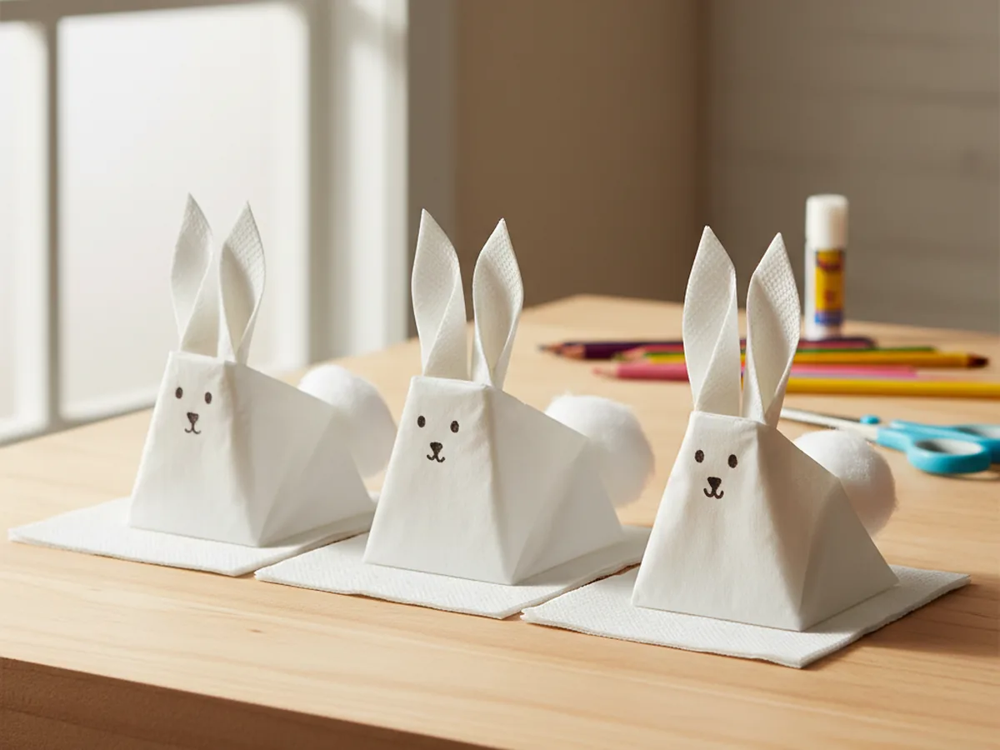
15. Mini Napkin Lanterns
Wrap a colorful napkin around a small clean jar, secure it gently with twine or a rubber band, and pop a battery tea light inside. The soft glow through the napkin paper looks dreamy at dusk and feels almost like a tiny indoor lantern. Make a row of them for a magical bedroom night light setup.
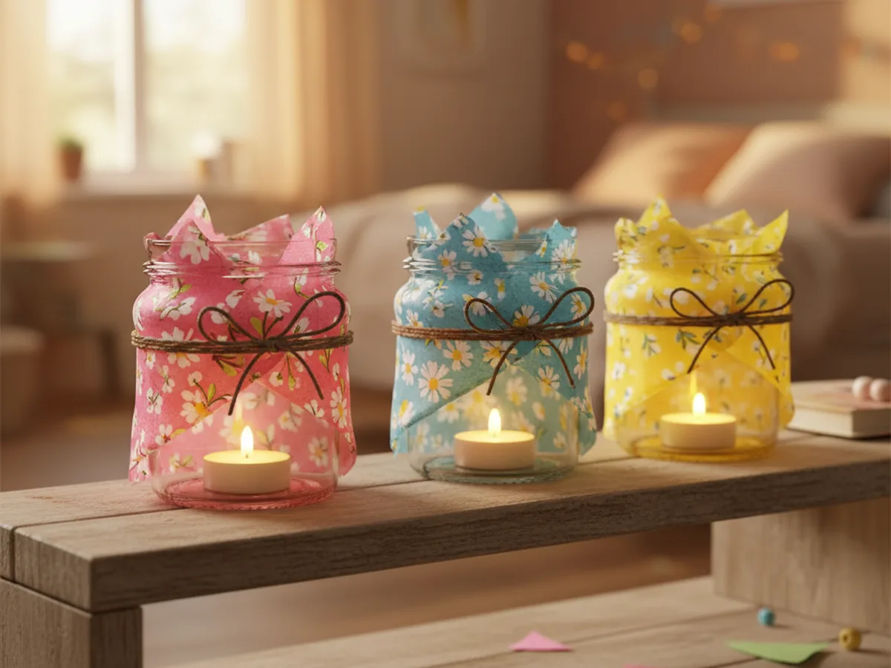
16. Decoupage Napkin Painted Rocks
Smooth a small printed napkin onto a clean rock and brush Mod Podge over the top to seal the pattern in place. Once dry, the rock looks like a tiny painted treasure. These decoupage paper napkin crafts make wonderful little garden markers or pocket-sized gifts for grandparents.
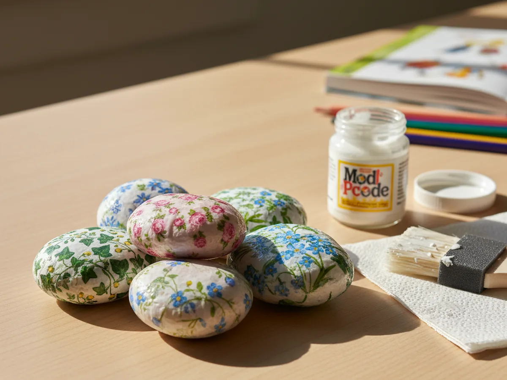
17. Decoupage Napkin Tote Bag
Lay a plain canvas tote flat, position your child's favorite napkin pattern on the front, and brush a thin layer of Mod Podge fabric medium over the top. Once dry, the design feels permanent and the bag looks like a real boutique find. It is one of the most rewarding napkin crafts for older kids who love a finished product to actually use.
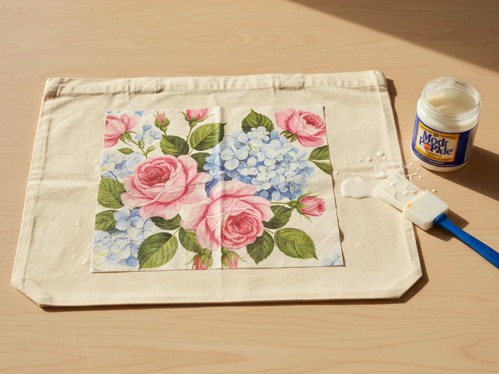
18. Stuffed Paper Napkin Pumpkins
Crumple a sheet of newspaper into a ball, set it on the center of an orange napkin, and gather the napkin up around the ball. Twist a green pipe cleaner around the top to form the stem and add a little curly green tendril. A bowl of these soft orange napkin pumpkins looks adorable on the table all October long. 🎃
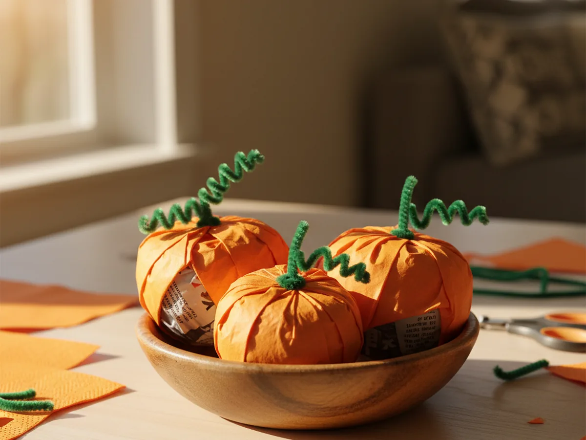
19. Marker Bleed Napkin Painting
Lay a flat white napkin on a piece of cardboard and let your child color a colorful drawing on top with washable markers. Lightly mist with a spray bottle and the colors melt and blend into a watercolor-style painting. These soft, dreamy little artworks look beautiful framed in a kid's bedroom.
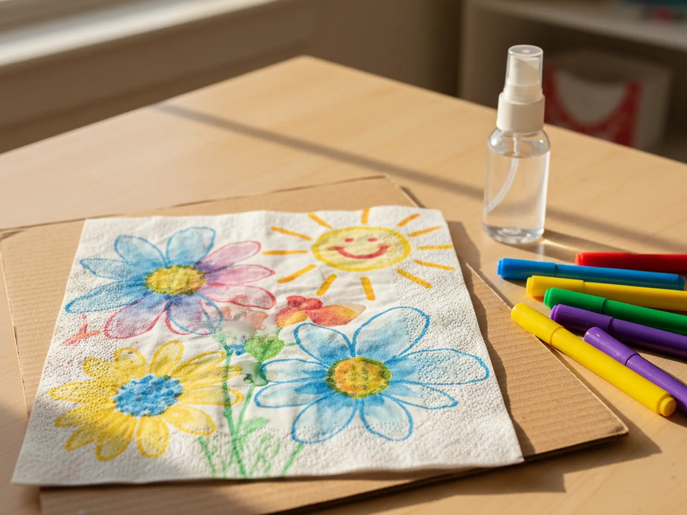
20. Paper Napkin Bouquet Card
Roll several mini napkin rosettes in soft pastel colors, glue them in a tight cluster on the front of a folded card, then add hand-drawn green stems and a little bow underneath. This sweet finishing project ties together all the small skills from the other crafts using paper napkins and makes a card any grandma or aunt would treasure. 💐
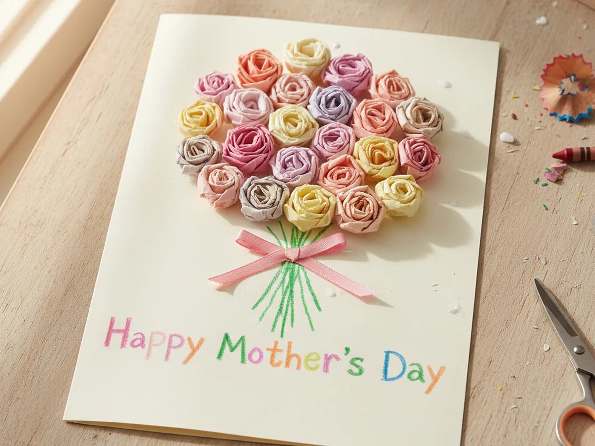
Final Thoughts
The best part of these crafts using paper napkins is honestly how surprised your kids will be at what one little napkin from the kitchen can become. A few folds, a dab of glue, a quick mist of water, and suddenly there is a flower, a butterfly, a tiny pumpkin, or a card someone is going to keep for years. Pick the project that matches your afternoon and start there. Happy crafting, friend!
More Crafts You'll Love
If your little one enjoyed these soft, papery projects, these two articles pair perfectly with the same warm and easy vibe.
- Tissue Paper Crafts: Cute and Easy Ideas Kids Will Love
- Easy Paper Flower Craft Kids Will Love to Make
Whichever project you pick first, expect a few giggles, a sprinkle of glue smudges, and a kitchen table that ends up just a little bit more magical.